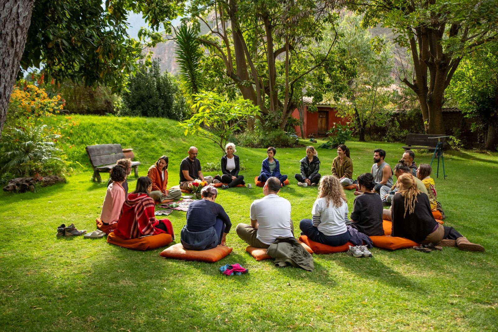
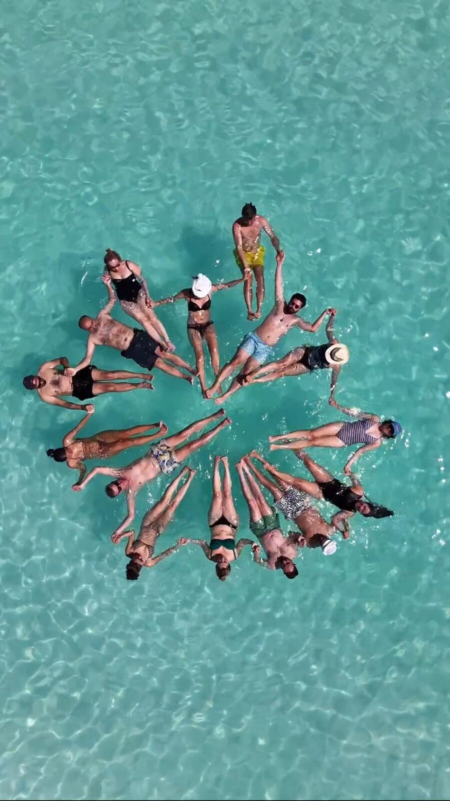

Sacred Valley, Peru
Our pilgrimage into the heart of the Andes. We walked ancient Inca paths, sat in ceremony at Moray and Salineras, and found ourselves held by the mountains in ways we hadn't expected.


Design Concept
Nasıl çalışıyor: Her kartın altında gizli bir galeri bulunuyor. Kartın sağ tarafında küçük bir "6 photos +" butonu var. Tıklandığında galeri aşağı doğru açılıyor — yatay kaydırılabilir, sabit yükseklikte, karanlık arka planlı bir şerit. Tekrar tıklanırsa kapanıyor. Galeri sayfayı dikey olarak büyütmüyor, yayına girdiğinde de ilk akışı bozmadı. Scroll ile fotoğraflar arasında gezilebiliyor.

Our pilgrimage into the heart of the Andes. We walked ancient Inca paths, sat in ceremony at Moray and Salineras, and found ourselves held by the mountains in ways we hadn't expected.

Following the Nile from its ancient temples to the desert silence of Siwa. We participated in ceremonies at dawn and sat in circle in places that held ten thousand years of human prayer.